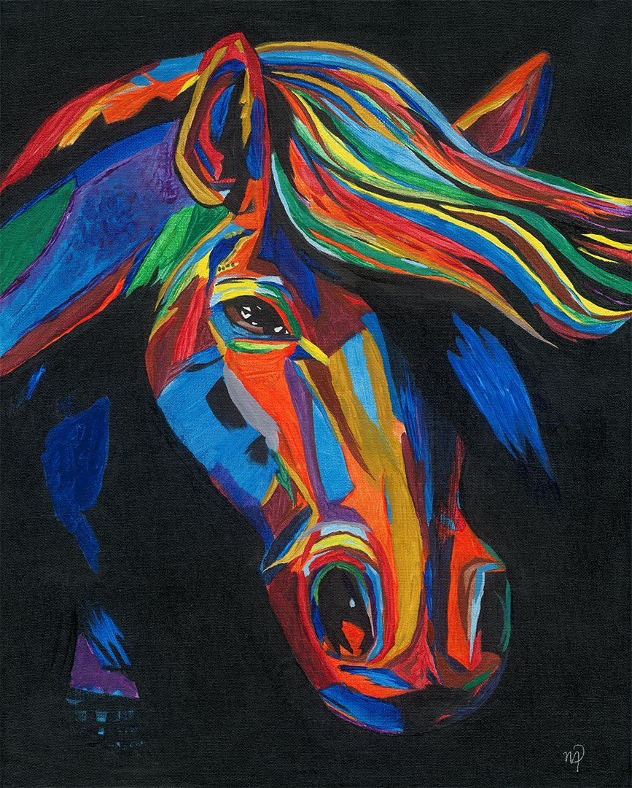
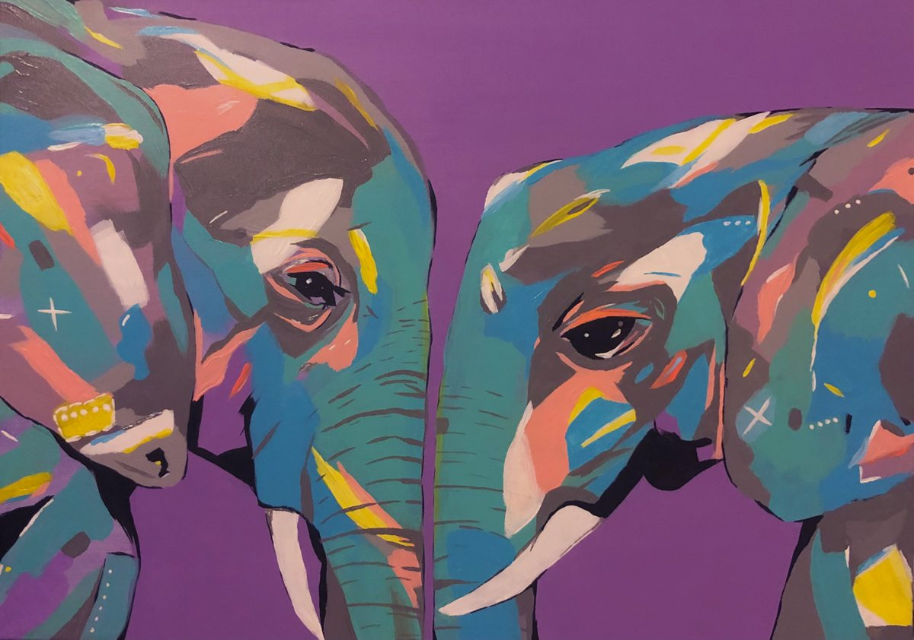
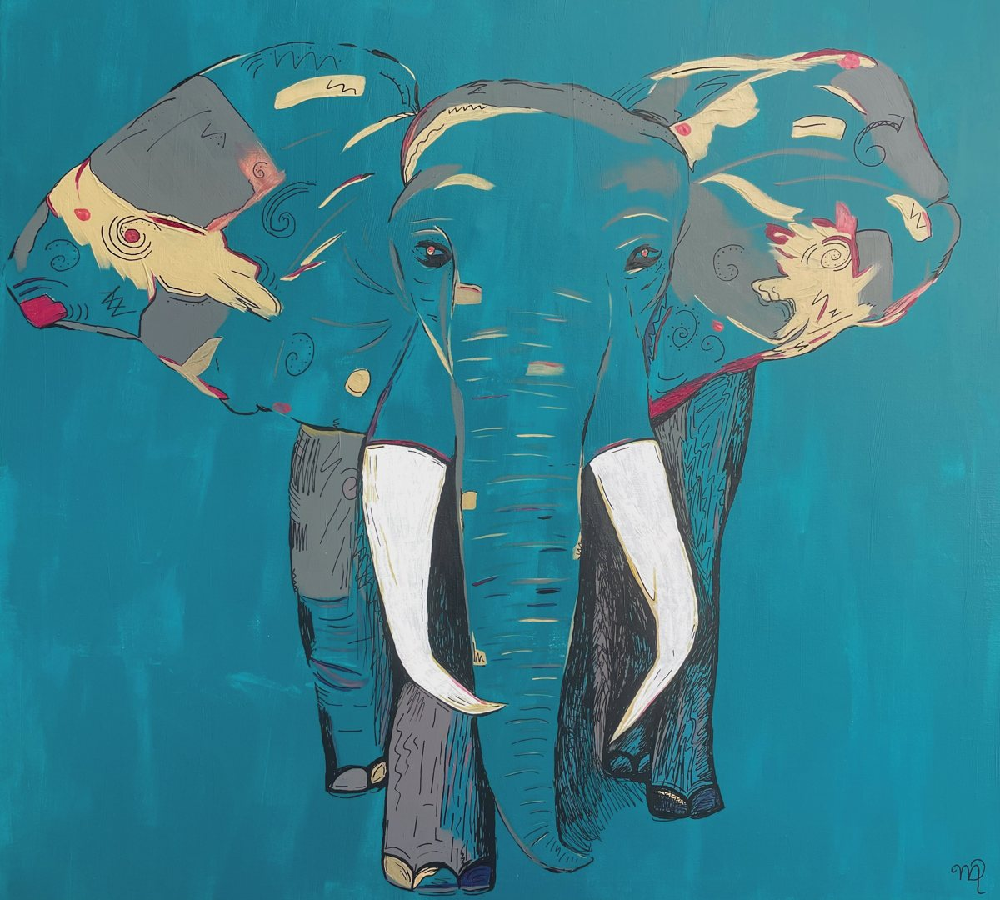
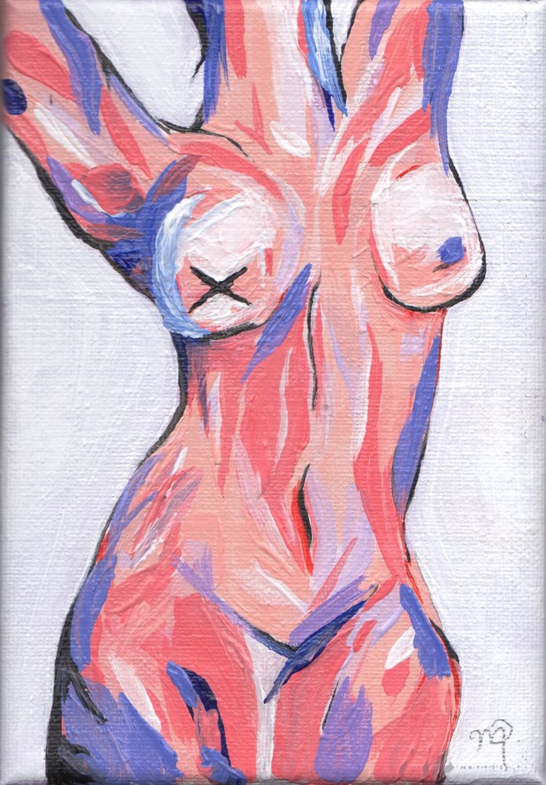
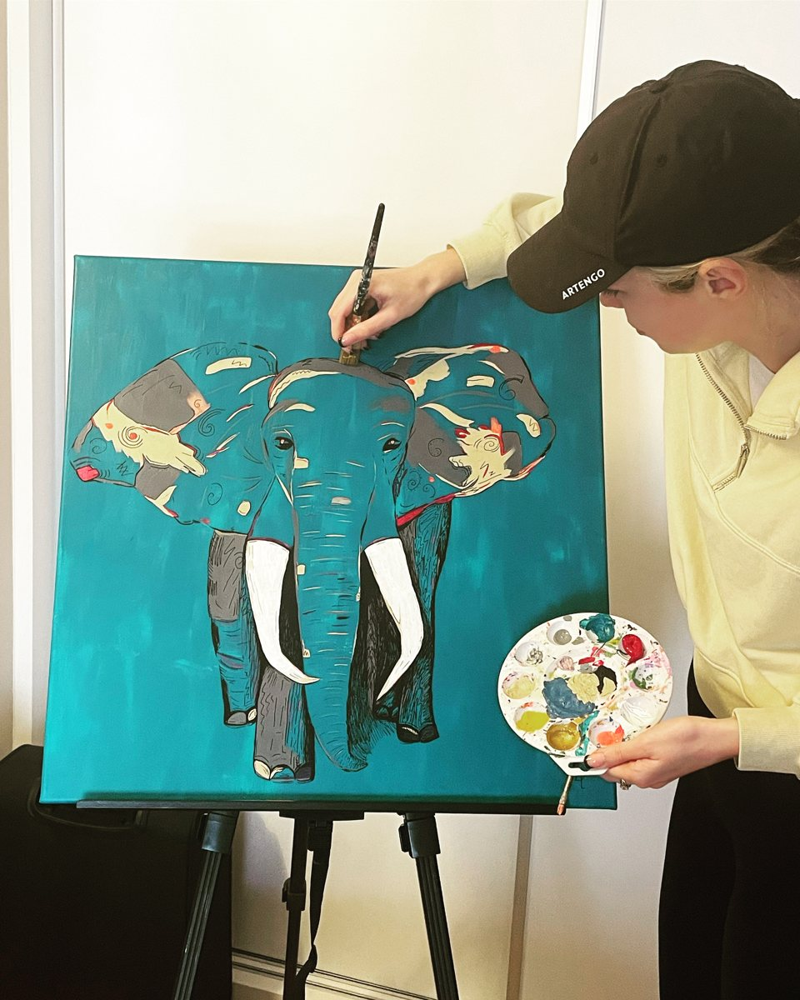
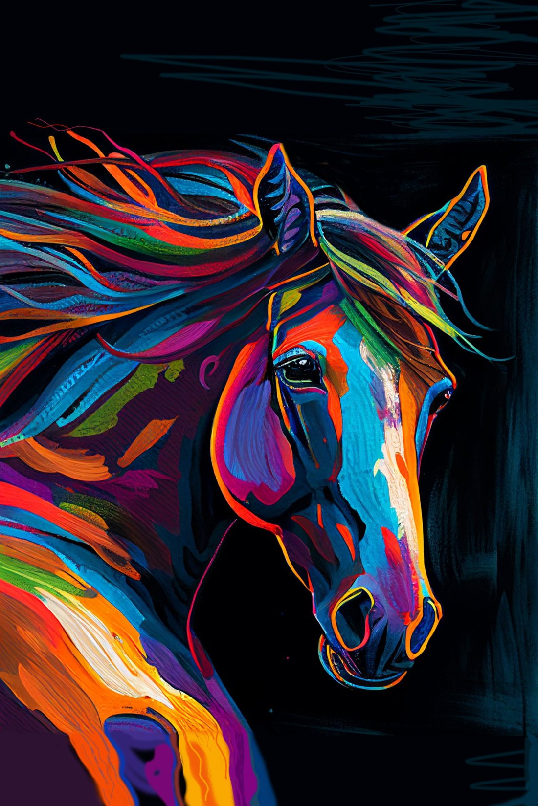
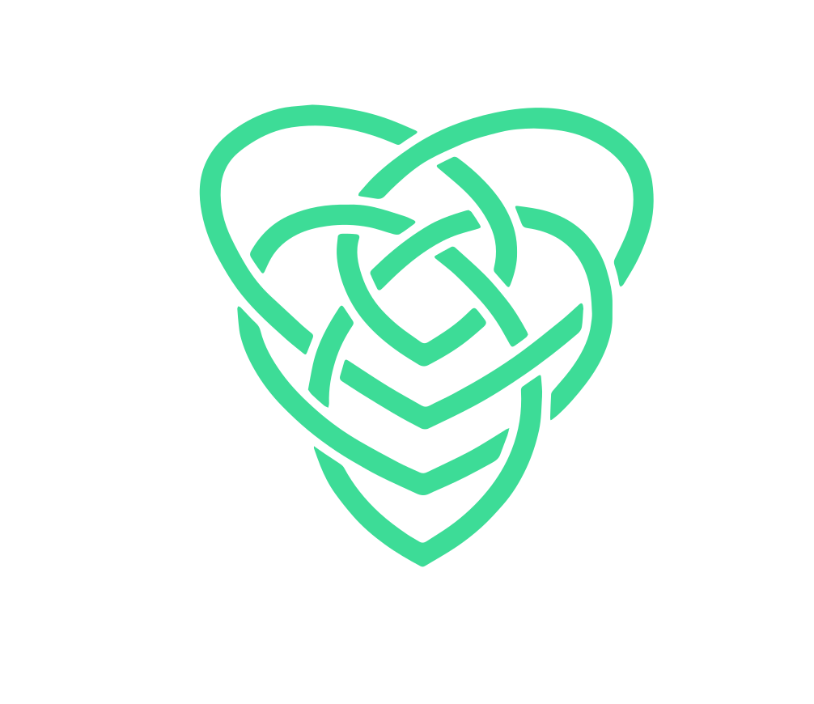

Niamh paints horses, elephants and other animals in electric colour. One of her artworks has been on the Moon since 2025, in the MoonMars museum at Mare Crisium.




Each animal sits on a single flat colour, black, teal or purple, so the figure is all you look at.
Manes, ears and hides are built from patches of orange, coral, violet, yellow and turquoise rather than natural tones.
A dark or glowing contour holds the shapes together and gives the eyes their focus.

Niamh's animals are acrylic paintings on canvas, made by hand at the easel. Each one starts with a single flat colour across the whole canvas, black, teal or purple, which becomes the ground the animal stands out from.
The animal is then built up in blocks of bright acrylic, with patches of coral, yellow, violet and turquoise laid side by side rather than blended. A fine drawn line goes in last to hold the shapes together and bring the eyes into focus, and every finished canvas carries her hand-painted signature.
Here she is working on the elephant.

In 2025 this horse travelled to the Moon with MoonMars, the first museum on the Moon. The collection rests at Mare Crisium, on the Moon's near side.
A separate body of work rooted in Irish knotwork: interlaced lines with no beginning and no end. The collection lives fully onchain, with only 200 pieces ever to exist.

A 420-page physical coffee table book and 3D digital publication documenting Web3 culture and digital art.
Curated exhibitions at real-life art events in Tallinn.
Ran marketing and created social media content for the event.
Handled Crypto Twitter marketing for these well-known Ethereum projects.
Member of Superteam Ireland, the Solana community in Ireland.
Runs the course Getting started with Self-Custody & NFT Marketing.
Niamh gives keynote talks at Web3 and art events. Watch one of her keynotes below.
Watch the keynote ↗Video on X · @irishnftgal“We should not fear AI, we should fear Quantum Computing.”
Niamh Aughney
Among them: